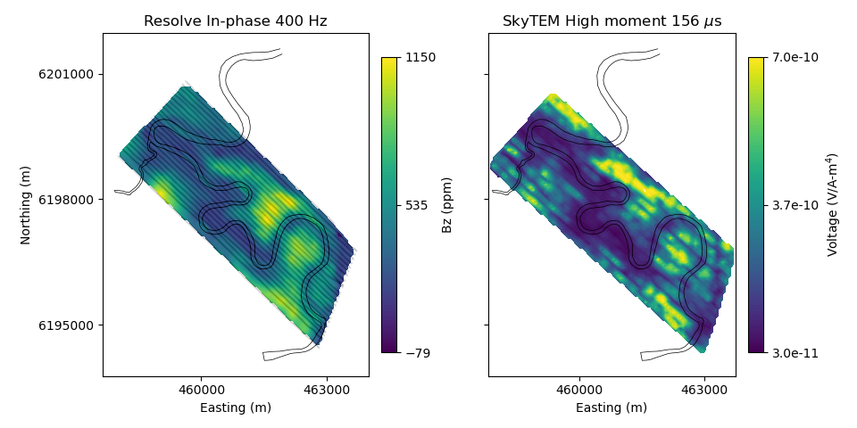

Note
Click here to download the full example code
Heagy et al., 2017 Load and Plot Bookpurnong Data¶
In this example, we load and plot the SkyTEM (2006) and RESOLVE (2008) Bookpurnong data, available at https://storage.googleapis.com/simpeg/bookpurnong/bookpurnong.tar.gz
This is published in
Lindsey J. Heagy, Rowan Cockett, Seogi Kang, Gudni K. Rosenkjaer, Douglas W. Oldenburg, A framework for simulation and inversion in electromagnetics, Computers & Geosciences, Volume 107, 2017, Pages 1-19, ISSN 0098-3004, http://dx.doi.org/10.1016/j.cageo.2017.06.018.
The script and figures are also on figshare: https://doi.org/10.6084/m9.figshare.5107711
This example was updated for SimPEG 0.14.0 on January 31st, 2020 by Joseph Capriotti
Out:
Downloading https://storage.googleapis.com/simpeg/bookpurnong/bookpurnong_inversion.tar.gz
saved to: /home/vsts/work/1/s/examples/20-published/bookpurnong_inversion.tar.gz
Download completed!
/usr/share/miniconda/envs/deploy/lib/python3.7/site-packages/discretize/utils/code_utils.py:95: FutureWarning: CylMesh has been deprecated, please use CylindricalMesh. It will be removed in version 1.0.0 of discretize.
warnings.warn(message, FutureWarning)
/usr/share/miniconda/envs/deploy/lib/python3.7/site-packages/discretize/utils/code_utils.py:129: FutureWarning: CylMesh.vectorCCz has been deprecated, please use CylMesh.cell_centers_z. It will be removed in version 1.0.0 of discretize.
warnings.warn(message, FutureWarning)
import numpy as np
import matplotlib.pyplot as plt
import h5py
import tarfile
import os
import shutil
from SimPEG import utils
import discretize
def download_and_unzip_data(
url="https://storage.googleapis.com/simpeg/bookpurnong/bookpurnong_inversion.tar.gz",
):
"""
Download the data from the storage bucket, unzip the tar file, return
the directory where the data are
"""
# download the data
downloads = utils.download(url)
# directory where the downloaded files are
directory = downloads.split(".")[0]
# unzip the tarfile
tar = tarfile.open(downloads, "r")
tar.extractall()
tar.close()
return downloads, directory
def save_dict_to_hdf5(fname, dictionary):
"""
Save a dictionary to hdf5
"""
f = h5py.File(fname, "w")
for key in dictionary.keys():
dset = f.create_dataset(key, data=dictionary[key])
f.close()
def run(plotIt=True, saveIt=False, saveFig=False, cleanup=True):
"""
Download and plot the Bookpurnong data. Here, we parse the data into a
dictionary that can be easily saved and loaded into other worflows (for
later on when we are doing the inversion)
:param bool plotIt: show the Figures?
:param bool saveIt: re-save the parsed data?
:param bool saveFig: save the matplotlib figures?
:param bool cleanUp: remove the downloaded and saved data?
"""
downloads, directory = download_and_unzip_data()
# data are in a directory inside bookpurnong_inversion
data_directory = os.path.sep.join([directory, "bookpurnong_data"])
# Load RESOLVE (2008)
header_resolve = "Survey Date Flight fid utctime helicopter_easting helicopter_northing gps_height bird_easting bird_northing bird_gpsheight elevation bird_height bird_roll bird_pitch bird_yaw em[0] em[1] em[2] em[3] em[4] em[5] em[6] em[7] em[8] em[9] em[10] em[11] Line "
header_resolve = header_resolve.split()
resolve = np.loadtxt(
os.path.sep.join([data_directory, "Bookpurnong_Resolve_Exported.XYZ"]),
skiprows=8,
)
# Omit the cross lines
resolve = resolve[(resolve[:, -1] > 30002) & (resolve[:, -1] < 38000), :]
dat_header_resolve = "CPI400_F CPQ400_F CPI1800_F CPQ1800_F CXI3300_F CXQ3300_F CPI8200_F CPQ8200_F CPI40k_F CPQ40k_F CPI140k_F CPQ140k_F "
dat_header_resolve = dat_header_resolve.split()
xyz_resolve = resolve[:, 8:11]
data_resolve = resolve[:, 16:-1]
line_resolve = np.unique(resolve[:, -1])
# Load SkyTEM (2006)
fid = open(
os.path.sep.join(
[data_directory, "SK655CS_Bookpurnong_ZX_HM_TxInc_newDTM.txt"]
),
"rb",
)
lines = fid.readlines()
fid.close()
header_skytem = lines[0].split()
info_skytem = []
data_skytem = []
for i, line in enumerate(lines[1:]):
if len(line.split()) != 65:
info_skytem.append(np.array(line.split()[:16], dtype="O"))
data_skytem.append(np.array(line.split()[16 : 16 + 24], dtype="float"))
else:
info_skytem.append(np.array(line.split()[:16], dtype="O"))
data_skytem.append(np.array(line.split()[17 : 17 + 24], dtype="float"))
info_skytem = np.vstack(info_skytem)
data_skytem = np.vstack(data_skytem)
lines_skytem = info_skytem[:, 1].astype(float)
line_skytem = np.unique(lines_skytem)
inds = lines_skytem < 2026
info_skytem = info_skytem[inds, :]
data_skytem = data_skytem[inds, :].astype(float)
xyz_skytem = info_skytem[:, [13, 12]].astype(float)
lines_skytem = info_skytem[:, 1].astype(float)
line_skytem = np.unique(lines_skytem)
# Load path of Murray River
river_path = np.loadtxt(os.path.sep.join([directory, "MurrayRiver.txt"]))
# Plot the data
nskip = 40
fig = plt.figure(figsize=(12 * 0.8, 6 * 0.8))
title = ["Resolve In-phase 400 Hz", "SkyTEM High moment 156 $\mu$s"]
ax1 = plt.subplot(121)
ax2 = plt.subplot(122)
axs = [ax1, ax2]
out_re = utils.plot2Ddata(
xyz_resolve[::nskip, :2],
data_resolve[::nskip, 0],
ncontour=100,
contourOpts={"cmap": "viridis"},
ax=ax1,
)
vmin, vmax = out_re[0].get_clim()
cb_re = plt.colorbar(
out_re[0], ticks=np.linspace(vmin, vmax, 3), ax=ax1, fraction=0.046, pad=0.04
)
temp_skytem = data_skytem[:, 5].copy()
temp_skytem[data_skytem[:, 5] > 7e-10] = 7e-10
out_sky = utils.plot2Ddata(
xyz_skytem[:, :2],
temp_skytem,
ncontour=100,
contourOpts={"cmap": "viridis", "vmax": 7e-10},
ax=ax2,
)
vmin, vmax = out_sky[0].get_clim()
cb_sky = plt.colorbar(
out_sky[0],
ticks=np.linspace(vmin, vmax, 3),
ax=ax2,
format="%.1e",
fraction=0.046,
pad=0.04,
)
cb_re.set_label("Bz (ppm)")
cb_sky.set_label("Voltage (V/A-m$^4$)")
for i, ax in enumerate(axs):
xticks = [460000, 463000]
yticks = [6195000, 6198000, 6201000]
ax.set_xticks(xticks)
ax.set_yticks(yticks)
ax.plot(river_path[:, 0], river_path[:, 1], "k", lw=0.5)
ax.set_aspect("equal")
if i == 1:
ax.plot(xyz_skytem[:, 0], xyz_skytem[:, 1], "k.", alpha=0.02, ms=1)
ax.set_yticklabels([str(" ") for f in yticks])
else:
ax.plot(xyz_resolve[:, 0], xyz_resolve[:, 1], "k.", alpha=0.02, ms=1)
ax.set_yticklabels([str(f) for f in yticks])
ax.set_ylabel("Northing (m)")
ax.set_xlabel("Easting (m)")
ax.set_title(title[i])
plt.tight_layout()
if plotIt:
plt.show()
if saveFig:
fig.savefig("bookpurnong_data.png")
cs, ncx, ncz, npad = 1.0, 10.0, 10.0, 20
hx = [(cs, ncx), (cs, npad, 1.3)]
npad = 12
temp = np.logspace(np.log10(1.0), np.log10(12.0), 19)
temp_pad = temp[-1] * 1.3 ** np.arange(npad)
hz = np.r_[temp_pad[::-1], temp[::-1], temp, temp_pad]
mesh = discretize.CylMesh([hx, 1, hz], "00C")
active = mesh.vectorCCz < 0.0
dobs_re = np.load(os.path.sep.join([directory, "dobs_re_final.npy"]))
dpred_re = np.load(os.path.sep.join([directory, "dpred_re_final.npy"]))
mopt_re = np.load(os.path.sep.join([directory, "mopt_re_final.npy"]))
# Down sample resolve data
nskip = 40
inds_resolve = np.r_[np.array(range(0, data_resolve.shape[0] - 1, nskip)), 16730]
booky_resolve = {
"data": data_resolve[inds_resolve, :],
"data_header": dat_header_resolve,
"line": resolve[:, -1][inds_resolve],
"xy": xyz_resolve[:, :2][inds_resolve],
"src_elevation": resolve[:, 12][inds_resolve],
"ground_elevation": resolve[:, 11][inds_resolve],
"dobs": dobs_re,
"dpred": dpred_re,
"mopt": mopt_re,
"z": mesh.vectorCCz[active],
"frequency_cp": np.r_[382, 1822, 7970, 35920, 130100],
"frequency_cx": np.r_[3258.0],
"river_path": river_path,
}
area = 314.0
waveform = np.loadtxt(os.path.sep.join([directory, "skytem_hm.wf"]))
times = np.loadtxt(os.path.sep.join([directory, "skytem_hm.tc"]))
booky_skytem = {
"data": data_skytem,
"data_header": header_skytem[17 : 17 + 24],
"line": lines_skytem,
"xy": xyz_skytem,
"src_elevation": info_skytem[:, 10].astype(float),
"ground_elevation": info_skytem[:, 15].astype(float),
"area": area,
"radius": np.sqrt(area / np.pi),
"t0": 0.01004,
"waveform": waveform,
"times": times,
}
if saveIt:
save_dict_to_hdf5(
os.path.sep.join([directory, "booky_resolve.hdf5"]), booky_resolve
)
save_dict_to_hdf5(
os.path.sep.join([directory, "booky_skytem.hdf5"]), booky_skytem
)
if cleanup:
os.remove(downloads)
shutil.rmtree(directory)
if __name__ == "__main__":
run(plotIt=True, saveIt=False, cleanup=False)
Total running time of the script: ( 0 minutes 2.467 seconds)
Estimated memory usage: 31 MB